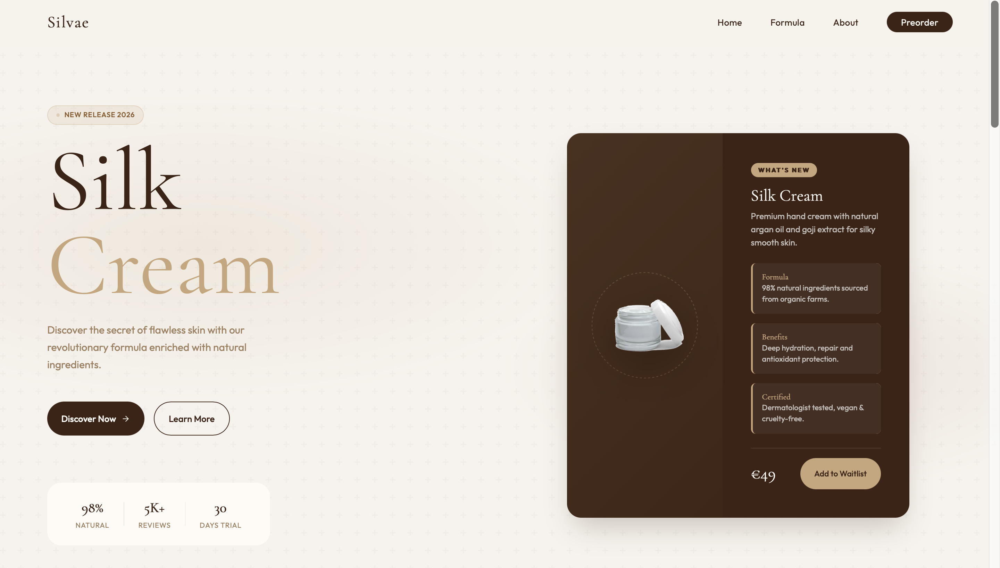
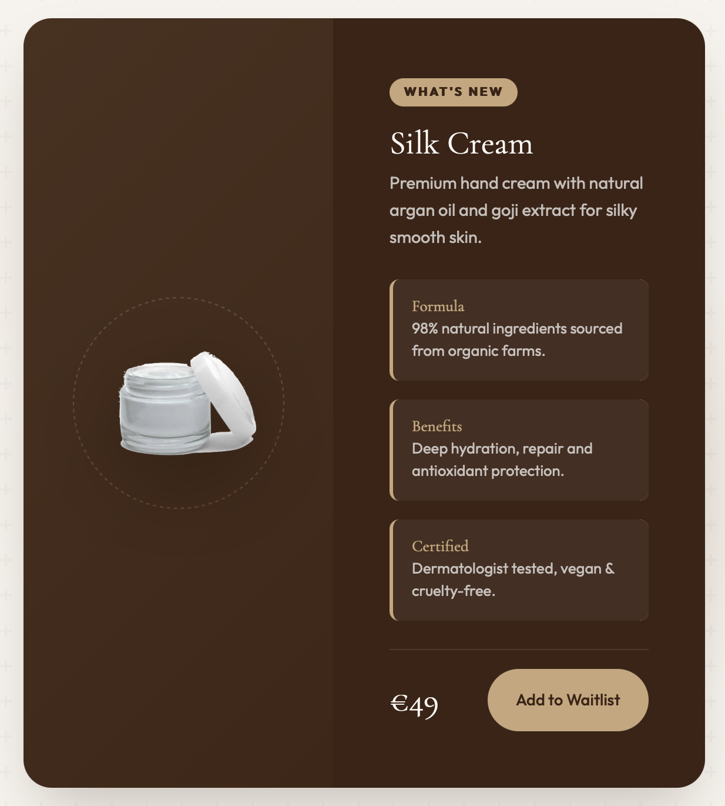
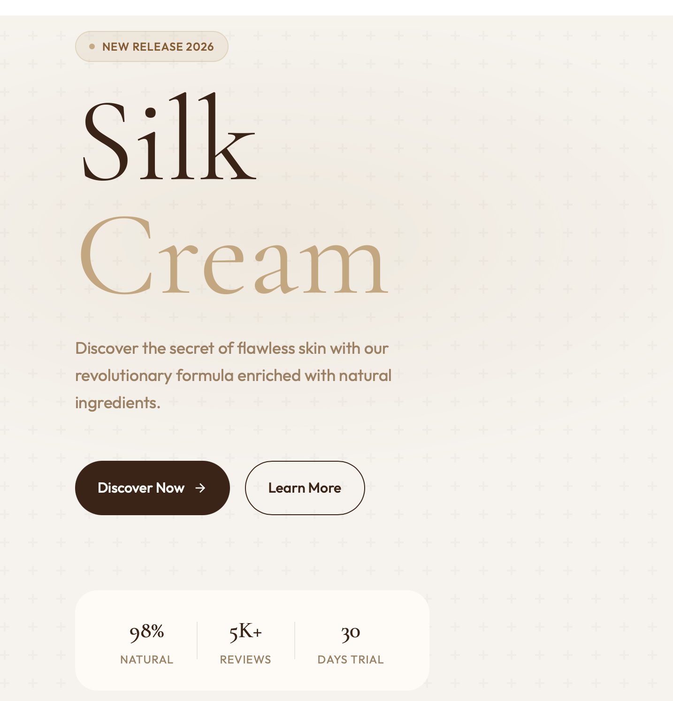
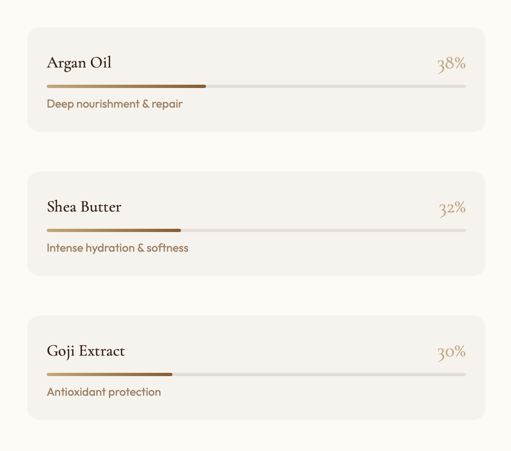
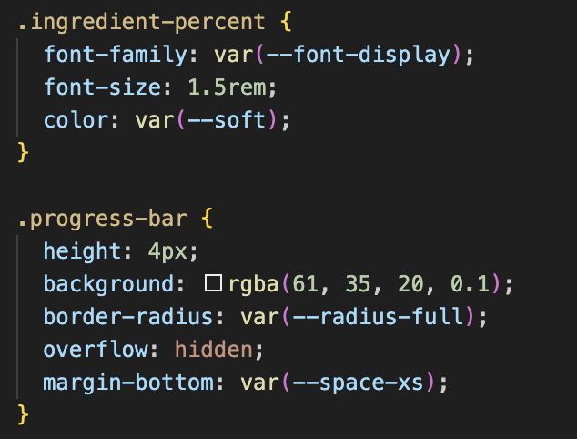
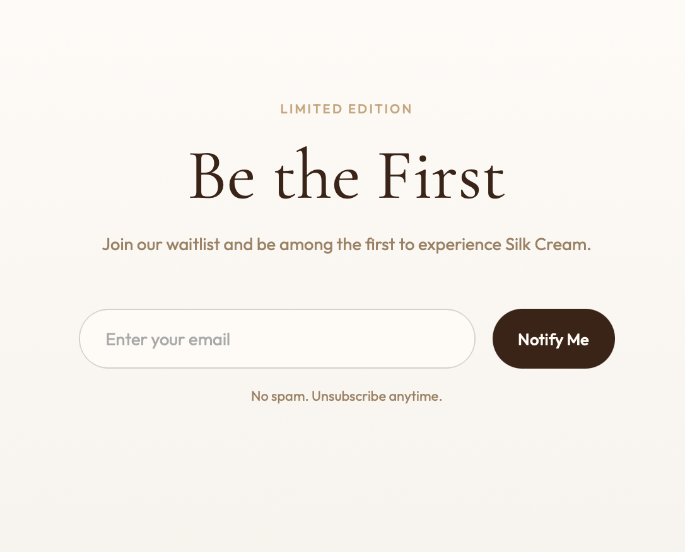
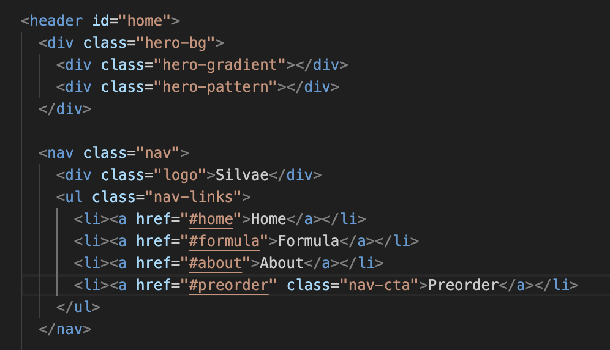

Silvae
website architecture
An overview of the website's main architectural components: first-scroll structure, sticky navigation bar, product card, visual grid, and final conversion CTA.
- Visual consistency with the original palette and fonts
- Premium experience with a responsive layout
- Lightweight interactions

Two-column hero layout
The first viewport uses a 1fr / 1fr composition: editorial content and CTAs on the left, featured product on the right. Visual hierarchy and contrast guide reading immediately.
- Full-height section with immediate impact
- Display typography for headline and key metrics
- Clear separation between primary and secondary CTAs
Sticky navbar with blur
The navigation remains fixed at the top and uses a semi-transparent blurred background. This preserves orientation and section access during scrolling without breaking context.
- Fixed positioning for constant accessibility
- Improved readability on variable backgrounds
- Highlighted call-to-action in the menu
Modular product card
The card combines image, product attributes, and pricing in one reusable block. The micro-interaction system strengthens premium perception without overloading the UI.
- Block structure (tag, description, details, footer)
- CSS hover animations (lift and scale)
- High contrast for readability and focus

Responsive grid layout
Main sections use CSS Grid to distribute informational and visual content. The design shifts to a single column at smaller breakpoints while preserving narrative clarity.
- Desktop grid balances text and imagery
- Mobile adaptation prioritizes content flow
- Spacing controlled through global variables
Background pattern and depth
Radial gradients and an SVG overlay pattern add depth without heavy hero images. The result is an elegant texture aligned with the brand's tone.
- CSS layering with multiple gradients
- Lightweight inline vector pattern
- Fine control of opacity and contrast

Ingredient progress bars
Formula percentages are rendered with CSS bars and custom properties (`--progress`). This approach cleanly separates content and presentation while keeping markup simple.
- CSS variables for fast configuration
- Width animation for visual feedback
- Easily reusable pattern across sections


Waitlist and code identification
The funnel ends with a simple email form and immediate call to action. The project identification block (`code_id`) supports traceability and technical coherence.
- Final call-to-action focused on conversion
- Minimal form to reduce friction
- Narrative closure of the user journey

